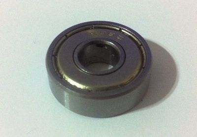
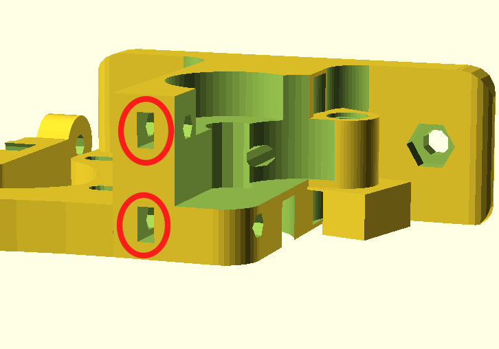
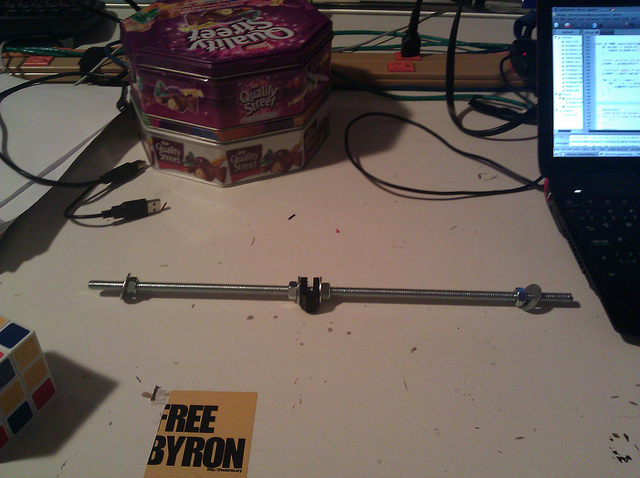
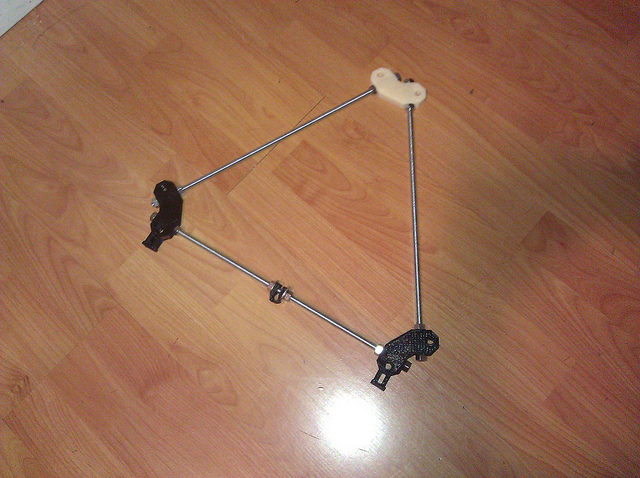

Prusa Mendel iteration 2
Prusa Mendel is simplified version of Mendel form RepRap project. RepRap is open source 3D printer.
Bill of Materials
Check all parts to get green BOM button in menu, then proceed to the assembly.
Don't worry, the status of your BOM remains even after refreshing the page!
Rods and Bars
| 1 x | Idler |
Nuts&bolts
| 3 x | 608 skate bearing | |
| 4 x | M4 nut | |
| 3 x | M3 10mm screw | |
| 2 x | M4 25mm screw | |
| 1 x | M8 hobbed bolt | |
| 8 x | M3 15mm screw with HEX head | |
| 2 x | M3 10mm screw with hex head | |
| 1 x | M3 25mm screw | |
| 1 x | M3 grub screw | |
| 2 x | M3 25mm screw with HEX head | |
| 12 x | M3 nut | |
| 73 x | M8 washer | |
| 74 x | M8 nut | |
| 29 x | M3 washer | |
| 1 x | M3 10mm screw with flat head | |
| 2 x | M3 40mm screw |
Printed
| 1 x | Extruder body | |
| 8 x | Bar clamp | |
| 4 x | Y bushing | |
| 2 x | Frame vertex | |
| 1 x | Y motor bracket | |
| 1 x | Small extruder gear | |
| 2 x | Rod clamp | |
| 4 x | Frame vertex with foot | |
| 1 x | Large extruder gear | |
| 2 x | Belt clamp | |
| 1 x | Extruder Idler | |
| 1 x | Z motor mount | |
| 1 x | X carriage |
Things Overview
List of things and their descriptions
Coupling tube
20mm long piece of PVC tube. 5mm inside diameter, 8mm outside diameter.
Frame triangle
Two triangle parts which will later form a frame.
Frame with axes
Frame with all axes mounted
Frame vertex
M4 nut
Frame
Frame for adding all of the other parts There is a triangle on each side of the Prusa RepRap. You will need to make two of these and then connect them together (in the next steps) to form the Prusa frame. Each side is an equilateral triangle with a frame vertex on each corner. You can use either footed or non-footed vertices to build this. (The footed ones look better, but are not critical.) The instructions assume you are using footed vertices.
Y motor bracket
Belt clamp
M8 hobbed bolt
Extruder Idler
Extruder idler
Frame with Y axis
Frame with Y axis mounted
Y bushing
M3 10mm screw
Bar clamp
NEMA17 stepper motor
M3 10mm screw with hex head
XZ axis
Assembled XZ axis
Large extruder gear
Frame vertex with foot

M3 25mm screw with HEX head
X end motor
Extruder body
Extruder body
Small extruder gear
Extruder spring
Spring used for idler on extruder.
M3 10mm screw with flat head
608 skate bearing
608 Bearing. When you have troubles finding it, try your local skateshop, because its used in skateboards.
M8 30mm screw
M4 25mm screw
M8 spring
Printable Bushing
X carriage

X end idler
Rod clamp
Z motor mount
Endstop holder
M3 grub screw
M3 40mm screw
Bushing
M3 20mm screw with hex head
Idler
Small M8 rod
M8 nut
Simple M8 nut or 5/16 in imperial variant. also can be used for other screwing things :-D
M3 nut
Pulley
Coupling
M3 15mm screw with HEX head
M3 25mm screw
Y axis
Assembled Y axis
Bearing guide
Helps to hold belt aligned on the bearing.
M3 20mm screw
Carriage
X-carriage with mounted extruder
M8 washer
M3 washer
M8 washer mudguard
Extruder
Extruder
Assembly Instructions
Assemble Small extruder gear
Things needed:
| 1 x | M3 nut |
| 1 x | M3 grub screw |
Steps:
- Insert nut into cavity in printed gear.
- Tighten the grub screw a bit, just to hold in place.
Assemble M8 hobbed bolt
Steps:
- Use thread cutting bit in electric screwdriver ...
Assemble Large extruder gear
Things needed:
| 1 x | M8 hobbed bolt |
Steps:
- Insert hobbed bolt into main hole.
- Add some M8 washers from other side, later with their count you adjust position of hobbed part in filament path.
Assemble Extruder Idler
Things needed:
| 1 x | 608 skate bearing |
| 1 x | Idler |
Steps:
- Insert piece of M8 rod into bearing.
- Insert 608 bearing with rod into printed idler part.
Assemble Extruder
Things needed:
| 2 x | 608 skate bearing |
| 1 x | Extruder body |
| 3 x | M3 10mm screw |
| 2 x | M4 nut |
| 1 x | Small extruder gear |
| 1 x | M3 25mm screw |
| 1 x | NEMA17 stepper motor |
| 1 x | Large extruder gear |
| 8 x | M3 washer |
| 1 x | M8 washer |
| 1 x | Extruder Idler |
| 1 x | M3 nut |
| 2 x | M3 40mm screw |
| 2 x | Extruder spring |
| 2 x | M8 nut |
Steps:
- Take idler and insert nut into small nut-trap inside the hinge.
- While holding the nut in place, preprare M3x25 bolt with washer and screw it into the hinge just enough to hold the nut.
- Now take the extruder body and idler. Place idler on the hinge counterpart and compleately screw the M3x25 bolt. This will create secured hinge.
- Place M4 nuts into their nut traps, secure them with piece of tape. We need them in place, since later they would be harder to access.
- Prepare your NEMA17 stepper motor and three M3x10 screws with washers.
- Hold motor on place and lightly tighten the screws. We need to adjust motor position later, no need to tighten it hard.
- Place two skate bearings on ther position, they should snuggly fit in.
- Insert prepared large gear into the body with mounted bearings.
- Check if the alignment of hobbed part with the filament path. Adjust it accordingly with adding or removing M8 washers.
- After adjusting, we need to fix the bolt in. So we place washer at the end of hobbed bolt and with two M8 nuts we will do locknut by tightening them against each other.
- Check if large gear turns freely.
- Prepare two M3x40 screws with sandwitch of washer-spring-washer.
- Insert two M3 nuts into nut traps on top of drive mechanism.
 - Insert prepared screws into the holes on idler. Close the idler and tighten the screws into the trapped nuts. More you tighten those screws, more pressure will be on fillament.
- Your extruder is done.

{kind=link}
Assemble Frame triangle
Things needed:
| 1 x | Bar clamp |
| 1 x | Frame vertex |
| 2 x | Frame vertex with foot |
Steps:
- Take one of the 370mm threaded rods, and slip an M8 washer onto the middle of it.
- Take the RP bar clamp (the U-shaped bit with the two holes) and slide the threaded rod through the two holes until the clamp sits next to the washer.
- Slide another washer onto the rod from the other side.
- Thread two M8 nuts onto either side of the clamp, until they are next to the washer, but do not tighten them yet.
- Thread another two nuts on each side of the rod, followed by washers. See the picture for what it should look like.
 - The bar clamp on the threaded rod.
- Slide the rod through the wider bottom (footed) side of two vertices. Make sure the feet point in the same direction, and the bulge on the non-footed sides of the vertices point outwards.
- Measure the distance. The distance between the two vertices should be 290mm (along the rod, equivalent is 11-13/32"). Get it approximately right now, we will check this again later. If you have a frame jig, place it between the two vertices and adjust the nuts until you can just barely fit the jig J1 between them.
- Place another washer and nut on the other side of the vertex. Tighten, but not too much. We'll need a bit of flexibility here still.
- Take another 370mm M8 threaded rod and place a nut followed by a washer at each end.
- Place one end of the threaded rod into the one of the two footed frame vertices. It should be in the same plane as the first threaded rod. Fix it in place with a washer and nut. You should now have two sides of the equilateral triangle.
- Take the third piece of threaded rod and put a nut and washer on each end. Place it in the other footed vertex and fix it in place with a washer and nut. You should now have a triangle of threaded rods with two footed vertices on two of the corners, nothing in the third corner, and a bar clamp between the two vertices.
- Take the third vertex (non-footed) and slide it onto the threaded rods in the final corner of the triangle. Measure the lengths of the three sides to make sure they are all 290mm long (along the rod from plastic part to plastic part, equivalent is 11-13/32"). Adjust the nuts to make sure this is so. Use the frame jig J1 if you have one. Once done, place a washer and nut on each of the two rods at the top of the vertex. Tighten all the outer nuts.
- The finished frame triangle
- You should now have a sturdy triangle with equal-length sides, two feet on the bottom, and a bar clamp between the feet. Adjust the nuts around the bar clamp (but do not crush the bar clamp together yet) until it's approximately in the middle of the rod. Leave the nuts there loose. See the photo for what you should have at this point.
- That's it, that's one of the triangles done. Repeat the entire procedure for the second triangle. It is identical to the first.

{kind=link}
{kind=link}